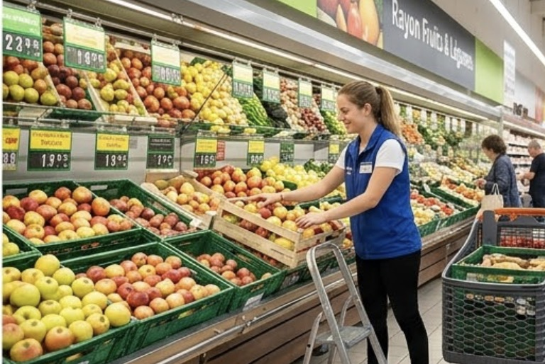
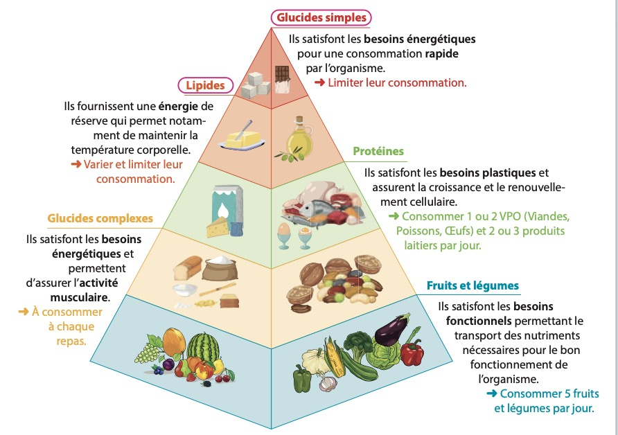

L'alimentation adaptée à son activité

Embauchée depuis peu dans une grande surface, Lina, 24 ans, a vu ses horaires de travail changer. Elle travaille désormais avec des horaires décalés et un temps de trajet plus long. Cet emploi du temps a modifié ses habitudes alimentaires.
Le matin, très tôt, elle ne prend qu'un café. Comme ses pauses changent souvent, elle grignote des biscuits ou des viennoiseries. Le midi, elle achète souvent un sandwich avec une boisson sucrée. Le soir, fatiguée, elle dîne de plats préparés.
Depuis, Lina remarque qu'elle mange de moins en moins équilibré et qu'elle a pris du poids.
| Question | Réponse |
|---|---|
| Qui est concerné par le problème ? | |
| Comment le problème apparaît-il ? | |
| Pourquoi faut-il résoudre ce problème ? |

5. À partir de la situation de Lina,